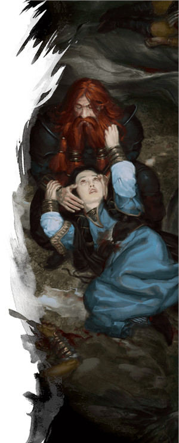

Domaine de la vie
Vous êtes un clerc du domaine de la vie. Vous servez un dieu du bien et des soins, et incarnez leurs principes de guérison. La vie est le domaine des divinités de la création et de la naissance, de la miséricorde et de la protection, de l'agriculture, de la nature et de la générosité. Tous les clercs ont le pouvoir de guérir, mais ceux qui puisent dans le pouvoir du domaine de la vie sont des parangons sans pareil en matière de préservation et de renouvellement de la vie. Bien que la Sagesse soit votre caractéristique d'incantation et qu'elle guide votre philosophie, réfléchissez à ce que pourraient être vos autres caractéristique. Un clerc avec une Force élevée peut apprécier la capacité de défendre physiquement les personnes les plus faibles contre les intimidateurs et les tyrans, alors qu'un clerc avec un Charisme élevé peut être un évangéliste.
Mais peu importe l'histoire de votre clerc du domaine de la vie, voici quelques précisions sur le fonctionnement de cette sous-classe à connaitre avant de vous engager à la jouer. Les clercs doivent choisir leur domaine divin au niveau 1, alors prenez une décision éclairée !
Capacités du domaine de la vie
Le domaine de la vie est la sous-classe de clerc la plus emblématique. Si à D&D 5 toutes les sous-classes de clercs proposées prouvent que les clercs sont plus que de simples guérisseurs, le domaine de la vie démontre qu'il y a un pouvoir immense dans ce créneau spécifique. Ces clercs obtiennent en effet des pouvoirs qui augmentent encore plus leurs sorts de guérison et leurs sorts de renforcement.
Les clercs gagnent leur domaine divin au niveau 1, ce qui contraste avec presque toutes les autres classes qui gagnent leurs sous-classes aux niveaux 2 ou 3. Ils gagnent cinq capacités de sous-classe aux niveaux 1, 2, 6, 8 et 17. En résumé, ces capacités de sous-classe permettent :
- De toujours avoir certains sorts thématiques préparés
- D'acquérir la maîtrise des armures lourdes
- De restaurer plus de points de vie que la normale chaque fois que vous lancez un sort de guérison
- De canaliser le pouvoir divin de votre dieu pour restaurer une grande quantité de points de vie
- De vous soigner un peu vous-même chaque fois que vous lancez un sort de guérison
- D'infliger des dégâts supplémentaires lors de vos attaques avec une arme
- De maximiser vos sorts et capacités de guérison
Avantages du domaine de la vie
En résumé, les clercs du domaine de la vie sont les maîtres inégalés de la guérison. Dans ce créneau important, ils sont les rois ! Il existe bien de nombreuses façons de se remettre des dégâts, mais si vous avez besoin de soins en plein combat, vous ne trouverez pas mieux qu'un clerc de la vie. Les clercs du domaine de la tombe peuvent être maîtres pour guérir ceux qui sont tombés inconscients, mais au niveau préventif ils ont de grosses lacunes. Et c’est particulièrement vrai si vous jouez avec des règles pénalisant le fait de tomber inconscient, comme les règles optionnelles présentées dans le Dungeon Master's Guide.
En plus de leurs capacités de guérison, les clercs de la vie acquièrent également une petite sélection de sorts de domaine (comme bénédiction et arme spirituelle) qui leur permettent de contribuer de manière proactive aux combats en renforçant leurs alliés et en effectuant de puissantes attaques spirituelles. Votre maîtrise des armures lourdes, bien que n'étant pas propre au domaine de la vie, est une aubaine qui fera de vous un guerrier résistant aux sorts et aux lames.
Inconvénients du domaine de la vie
Malheureusement, le domaine de la vie n'a rien pour augmenter votre polyvalence au-delà d'un rôle de soutien. Si vous voulez être un clerc capable de changer facilement de rôle au sein du groupe, le domaine de la vie n’est pas la bonne voie pour vous. D'autres domaines, comme celui de la lumière ou de la tempête, ont accès à certains sorts en dehors de la liste de sorts de clercs habituels, grâce à leurs sorts de domaines. Malheureusement, le domaine de la vie n'offre pas une telle polyvalence.
En mettant tous vos œufs dans le même panier, vous risquez de vous sentir loin d'être indispensable si d'autres membres du groupe ont des capacités de guérison ou dans les situations où la guérison n’est pas nécessaire. Le fait de mettre toutes vos capacités au service de la guérison vous met également dans une position très réactive, car vous devez attendre que des pièges ou des créatures blessent vos alliés avant de pouvoir utiliser vos traits les plus puissants et les plus efficaces. À D&D, dans les combats, il est généralement préférable d'avoir une force offensive puissante ou au moins un moyen d'atténuer activement les dégâts plutôt que de dépenser votre précieuse action en combat à restaurer des points de vie, d'autant plus qu'un personnage combat aussi bien avec 1 pv qu'avec son maximum de points de vie.
Étant donné que les capacités de votre sous-classe rendent vos sorts de soins incroyablement puissants, vous pouvez pallier votre manque de capacités proactives en choisissant des sorts actifs, comme ceux proposés dans la section Sorts ci-dessous.
Exemple de personnage
Si vous jouez un clerc du domaine de la vie de niveau 1, vous devez choisir une race qui vous donne un bonus en Sagesse, comme un nain des collines. Les races avec des bonus que vous pouvez attribuer à n’importe quelle caractéristique, comme la variante de l'humain ou le demi-elfe, vous permettent également d’attribuer votre bonus de caractéristique à votre guise, tout en vous laissant acquérir d’autres traits utiles, comme la maîtrise de compétences supplémentaires. Après la Sagesse, la Force vous aidera à devenir un meilleur combattant physique et la Dextérité vous aidera à combattre à distance. L'Intelligence fera de vous un utilisateur de compétences plus scolaire et le Charisme vous aidera à devenir un meilleur évangéliste et/ou diplomate. Et, comme toujours, la Constitution vous rendra plus résistant, un trait utile pour tout aventurier.
Comme d'habitude, le background de votre personnage dépend de vous. De nombreux clercs ont l'historique d'acolyte et ont suivi une formation sacerdotale depuis leur naissance, mais d'autres ont eu la foi plus tard dans leur vie. Vous êtes peut-être un soldat qui a consacré des années de sa vie à un temple après avoir subi une terrible blessure et avoir survécu miraculeusement. Ou un charlatan qui a failli être lapidé dans les rues d'une ville et qui ne doit son salut qu'à la charité d'un humble clerc dont il est devenu l'élève.
Le choix de l'équipement lors de la création de votre clerc est une bonne idée. Vous maîtrisez les armures lourdes, donc vous pouvez prendre une cotte de mailles, mais vous ne maîtrisez pas les armes de guerre, donc vous ne pouvez donc pas prendre un marteau de guerre. Des détails tels que le type de symbole sacré que vous portez sont des décisions esthétiques ; c'est selon vos goûts.
Sorts
En tant que clerc, vous disposez de la liste complète des sorts de clerc chaque fois que vous préparez vos sorts en début de journée. Néanmoins, quand on joue un clerc, on aime bien avoir une liste de sorts typique que le personnage a préparée ; cela évite d'avoir à resélectionner tous ses sorts au début de chaque journée. Étant donné que vous allez principalement jouer un rôle de soutien dans votre groupe, il sera utile d'avoir des sorts pour renforcer les alliés [buff] et affaiblir les ennemis [debuff]. Heureusement, vous disposez déjà de plusieurs sorts de cette nature préparés en permanence grâce à votre capacité Sorts de domaine.
En tant que clerc niveau 1, vous connaissez trois sorts mineurs et pouvez préparer un nombre de sorts de niveau 1 égal à 1 + votre modificateur de Sagesse. À ce stade votre modificateur de Sagesse devrait être de +2 ou +3, de sorte que vous serez en mesure de choisir trois ou quatre sorts de niveau 1 chaque fois que vous terminez un repos long. Et même en tant que personnage de soutien, vous devriez avoir au moins un sort mineur offensif ; flamme sacrée est un bon choix. Ceci dit, vos sorts mineurs sont une question de préférence, et presque tous vous serviront.
Vous pouvez préparer n'importe quels sorts de niveau 1 à partir de la liste de sorts du clerc, mais vous pouvez utiliser la liste de sorts ci-dessous comme une base de sorts polyvalents qui vous serviront dans la plupart des cas. Quand vous aurez une idée plus précise des dangers auxquels votre personnage devra faire face au cours de l'aventure, vous pourrez personnaliser ces sorts. Essayez de choisir un sort de soutien, un sort défensif et un sort offensif. Si vous avez une Sagesse élevée et pouvez préparer des sorts supplémentaires, choisissez les autres comme bon vous semble. Cette liste n'est toutefois là que pour vous aider à démarrer si vous jouez un clerc du domaine de la vie pour la première fois. Avec l'expérience, vous pouvez bien entendu choisir d'autres sorts (notez que, grâce à vos Sorts de domaine, vous avez toujours les sorts bénédiction et soins préparés).
- Fléau (défensif)
- Injonction (soutien/social)
- Éclair traçant (offensif)
- Mot de guérison (soutien)
- Blessure (défensif)
- Protection contre le mal et le bien (défensif)
- Bouclier de la foi (défensif)
Aux niveaux supérieurs
Au fur et à mesure que vous gagnerez des niveaux de clerc, le domaine de la Vie vous conférera de plus en plus de pouvoirs de guérison. Même si vos capacités de combat direct ne deviendront jamais très puissantes, n'ayez pas peur d'entrer dans le feu du combat pour soigner vos alliés ; Guérisseur béni, au niveau 6, vous soignera un peu chaque fois que vous guérissez quelqu'un d'autre. Et si vos attaques au corps à corps ne sont pas aussi puissantes que celles des guerriers et des paladins, votre capacité de survie est considérable.
Si vous utilisez beaucoup de sorts de concentration, prendre le don Mage de guerre au niveau 4 est un bon investissement, surtout si vous aimez être dans le vif du sujet. Sinon, si vous avez besoin d'atténuer encore plus les dégâts, le don Spécialiste des armures lourdes vous aidera à surmonter les dégâts contondants, perforants et tranchants de vos ennemis.
Basé sur un article de James Haeck, traduit par blueace